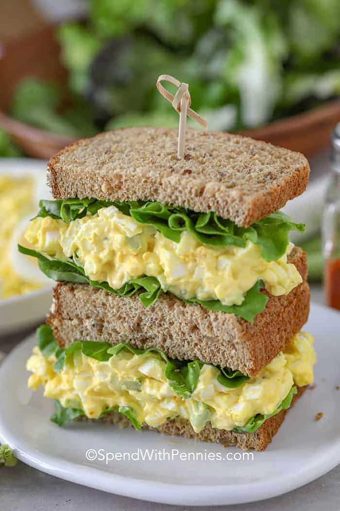

Credit goes to: https://www.spendwithpennies.com/best-egg-salad-recipe/
This is good egg salad. You could also say that this is the best egg salad. Boil the egg in a pot, and then witness the protein filled snack waiting to be eaten. Sometimes people make potato salad with boiled eggs. Sometimes people eat boiled eggs with ramen noodles. Spicy ramen noodles aren't the only thing that the boiles eggs taste good with. This recipe will have you building a sandwich that you will love and cherish for years to come.